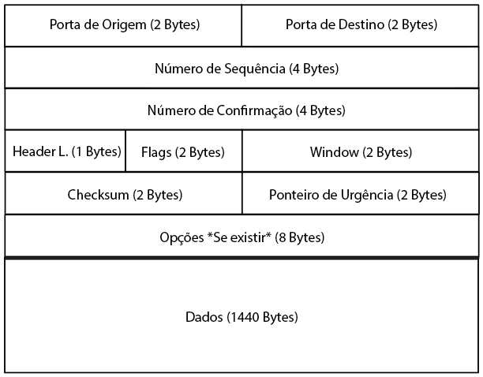

Diferente do ARP neste caso o endereço necessário foi apenas o de um arquivo único na web (URL). Antes de realizar a captura com o Wireshark foi realizado um teste para ter certeza de que o comando "Wget -URL-" estava funcionando corretamente.
Uma fez que o processo foi concluido sem erros. Foi iniciada a captura com o filtro "tcp and host -dominio do site-" e então novamente o processo com o Wget foi repetido para que a captura fizesse efeito.
Para mostrar sua compreensão do TCP, esboce uma figura do segmento TCP que você estudou. Sua figura deve mostrar a posição e o tamanho em bytes dos campos do cabeçalho TCP que você pôde observar usando o Wireshark. Não divida o campo Sinalizadores ou qualquer campo Opções e, se descobrir que alguns campos TCP compartilham um byte, agrupe-os. Como de costume, sua figura pode simplesmente mostrar a moldura como um retângulo longo e fino. Tente não olhar para a figura de um segmento TCP em seu texto ou na Internet; verifique-o depois para observar e investigar quaisquer diferenças.
Foi utilizado um frame de comprimento (Length) 1494 Bytes:
